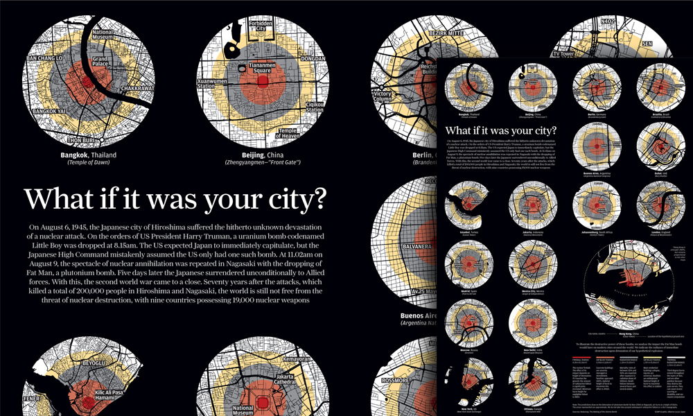

Seeing the Error of Your Ways
Reconociendo nuestros errores de percepción
@lenagroeger | bit.ly/malofiej24
The ProPublica Nerds
The Brain + Graphics

Our Mind's Everyday Quirks
Las peculiaridades de nuestra mente
What The Judge Ate for Breakfast
What the Malofiej Judges Ate for Breakfast
We Hate to Wait
The Average Investor
The Weight of Authority
The Warmth of Personality
The Whiff that Keeps on Giving
A Tasty Sight
Frame of Mind
Words of Difference
Survivorship Bias • Swimmer’s Body Illusion • Clustering Illusion • Social Proof • Sunk Cost Fallacy • Reciprocity • Confirmation Bias • Authority Bias • Contrast Effect • Availability Bias • The It’ll-Get-Worse-Before-It • Story Bias • Hindsight Bias • Overconfidence Eff • Chauffeur Knowledge • Illusion of Control • Incentive Super-Response Tendency • Regression to the Mean • Outcome Bias • Paradox of Choice • Liking Bias • Endowment Effect • Coincidence • Groupthink • Neglect of Probability • Scarcity Error • Base-Rate Neglect • Gambler’s Fallacy • The Anchor • Induction • Loss Aversion • Social Loafing • Exponential Growth • Winner’s Curse • Fundamental Attribution Error • False Causality • Halo Effect • Alternative Paths • Forecast Illusion • Conjunction Fallacy • Framing • Action Bias • Omission Bias • Self-Serving Bias • Hedonic Treadmill • Self-Selection Bias • Association Bias • Beginner’s Luck • Cognitive Dissonance • Hyperbolic Discounting • “Because” Justification • Decision Fatigue • Contagion Bias • The Problem with Averages • Motivation Crowding • Twaddle Tendency • Will Rogers Phenomenon • Information Bias • Effort Justification • The Law of Small Numbers • Expectations • Simple Logic • Forer Effect • Volunteer’s Folly • Affect Heuristic • Introspection Illusion • Inability to Close Doors • Neomania • Sleeper Effect • Alternative Blindness • Social Comparison Bias • Primacy and Recency Effects • Not-Invented-Here Syndrome • The Black Swan • Domain Dependence • False-Consensus Effect • Falsification of History • In-Group Out-Group Bias • Ambiguity Aversion • Default Effect • Fear of Regret • Salience Effect • House-Money Effect • Procrastination • Envy • Personification • Illusion of Attention • Strategic Misrepresentation • Overthinking • Planning Fallacy • Deformation Professionnelle • Zeigarnik Effect • Illusion of Skill • Feature-Positive Effect • Cherry Picking • Fallacy of the Single Cause • Intention-to-Treat Error • News Illusion
Visuals Fool Our Minds, Too
Las imágenes nos engañan también
Judging a Face
Swayed by the Brain
Bars vs Lines
“The more male a person is, the taller he/she is.”
Optical Illusions Show Us Our Errors
Ilusiones ópticas pueden mostrarnos nuestros errores
Same Colors Look Different
Straight Lines Look Curved
Ikea Nightmares
Lines Don't Look the Same Length
Rectangles Don't Look the Same Size
But they are!!
This Dancer Spins Both Ways

An Impossible Chocolate Bar
Graphics Can Reveal Our Blind Spots
Los gráficos pueden revelar nuestros prejuicios
The Ease of Reading
Our Terrible-ness at Big Numbers
The Extent of the Damage

“Rhetorical Scroll”

“You-do-it” Graphics Help Us Realize
“Inténtelo-usted” gráficos ayudarnos a realizar
#youdoit graphics?
You realize how hard it is to live on minimum wage.

Survivorship Bias • Swimmer’s Body Illusion • Clustering Illusion • Social Proof • Sunk Cost Fallacy • Reciprocity • Confirmation Bias • Authority Bias • Contrast Effect • Availability Bias • The It’ll-Get-Worse-Before-It • Story Bias • Hindsight Bias • Overconfidence Eff • Chauffeur Knowledge • Illusion of Control • Incentive Super-Response Tendency • Regression to the Mean • Outcome Bias • Paradox of Choice • Liking Bias • Endowment Effect • Coincidence • Groupthink • Neglect of Probability • Scarcity Error • Base-Rate Neglect • Gambler’s Fallacy • The Anchor • Induction • Loss Aversion • Social Loafing • Exponential Growth • Winner’s Curse • Fundamental Attribution Error • False Causality • Halo Effect • Alternative Paths • Forecast Illusion • Conjunction Fallacy • Framing • Action Bias • Omission Bias • Self-Serving Bias • Hedonic Treadmill • Self-Selection Bias • Association Bias • Beginner’s Luck • Cognitive Dissonance • Hyperbolic Discounting
Thanks!
¡Gracias!
“Because” Justification • Decision Fatigue • Contagion Bias • The Problem with Averages • Motivation Crowding • Twaddle Tendency • Will Rogers Phenomenon • Information Bias • Effort Justification • The Law of Small Numbers • Expectations • Simple Logic • Forer Effect • Volunteer’s Folly • Affect Heuristic • Introspection Illusion • Inability to Close Doors • Neomania • Sleeper Effect • Alternative Blindness • Social Comparison Bias • Primacy and Recency Effects • Not-Invented-Here Syndrome • The Black Swan • Domain Dependence • False-Consensus Effect • Falsification of History • In-Group Out-Group Bias • Ambiguity Aversion • Default Effect • Fear of Regret • Salience Effect • House-Money Effect • Procrastination • Envy • Personification • Illusion of Attention • Strategic Misrepresentation • Overthinking • Planning Fallacy • Deformation Professionnelle • Zeigarnik Effect • Illusion of Skill • Feature-Positive Effect • Cherry Picking • Fallacy of the Single Cause • Intention-to-Treat Error • News Illusion